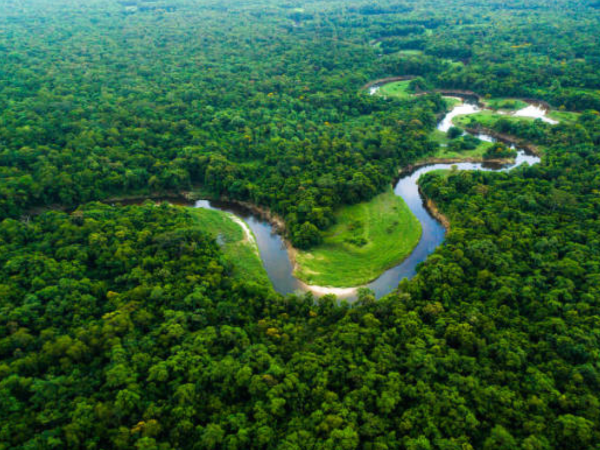

O estado do Amazonas é o maior do Brasil em extensão territorial e está localizado na Região Norte. Sua capital é Manaus, que também é o principal centro econômico da região. O clima do Amazonas é equatorial, caracterizado por temperaturas elevadas durante todo o ano e alta umidade, com chuvas frequentes. O estado é dominado pela Floresta Amazônica, considerada a maior floresta tropical do mundo, com enorme biodiversidade. A hidrografia é muito importante, com destaque para o Rio Amazonas e seus numerosos afluentes, que formam a maior bacia hidrográfica do planeta. A economia do Amazonas se baseia principalmente na indústria, especialmente na Zona Franca de Manaus, além do extrativismo vegetal, pesca e atividades sustentáveis ligadas à floresta. A cultura do estado é fortemente influenciada pelos povos indígenas, que têm grande importância na formação da identidade local. Entre as manifestações culturais mais conhecidas está o Festival de Parintins, com a tradicional disputa dos bois-bumbás. O Amazonas também é muito importante para o equilíbrio ambiental do planeta, pois a floresta ajuda na regulação do clima global e abriga uma imensa variedade de espécies de plantas e animais.

Voltar